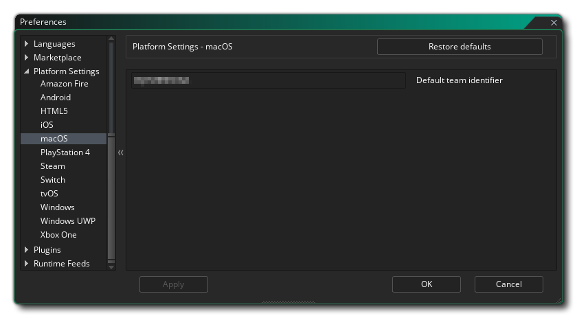

Esta sección del manual cubre las diferentes Preferencias específicas de plataforma que se deben configurar antes de poder compilar sus juegos para ciertos objetivos. Por lo general, estos solo deben configurarse una vez para comenzar (aunque las actualizaciones futuras de los tiempos de ejecución pueden requerir ciertas modificaciones, pero se mencionarán en las Notas de la versión ) y se utilizan para apuntar a cualquier SDK requerido y establecer opciones básicas por cómo quieres que GameMaker Studio 2 compile tus proyectos de juego para cualquier plataforma. Tenga en cuenta que las plataformas disponibles dependerán de la Licencia que tenga y no todas estarán disponibles.
A continuación hay una lista de todas las plataformas de destino disponibles y sus preferencias:
Las preferencias de Amazon Fire se dividen en varias secciones que se enumeran a continuación. Algunas de ellas se refieren a herramientas de Android, ya que el objetivo de AMazon Fire se basa en Android y comparte los mismos requisitos de SDK.
En la parte superior de las preferencias, tiene la opción de sincronizar las configuraciones de la exportación de Android. Esto es para aquellas personas que tienen la Licencia Móvil y ya han configurado y usado la exportación de Android, ya que Amazon Fire usa casi las mismas herramientas de compilación que Android. Simplemente haga clic aquí para importar todas las configuraciones apropiadas de Android, luego reviselas para asegurarse de que sean correctas.
Debajo del botón Sincronizar, puede establecer el tamaño del Heap de memoria para el JDK de Android. A continuación, debe configurar las diferentes rutas para que GameMaker Studio 2 sepa dónde buscar las diversas herramientas necesarias para construir el paquete ejecutable final y probar su juego. Esto se divide en tres secciones para Android SDK, Android NDK y Java JDK. Estas rutas se deberían haber rellenado automáticamente, pero si tiene algún problema, puede hacer clic en el botón de la derecha para abrir el explorador de archivos y seleccionar manualmente las ubicaciones para cada elemento. Aquí puede encontrar detalles de las versiones que se requieren para cada uno de los elementos del SDK. Las rutas deben validarse a medida que las aplica y un mensaje mostrará "Encontrado" o le informará de cualquier error (en cuyo caso debe revisar toda la información para asegurarse de que sea correcta).
Debajo tienes las diferentes opciones de embalaje que son:
- Siempre haga la instalación completa de APK: Marcar esto hará que GameMaker Studio 2 elimine de su dispositivo los corredores anteriores de su juego, así como todos los archivos asociados (por ejemplo, archivos *.ini) antes de instalar una nueva versión de el juego.
- Instalar en el paquete: cuando esta opción está marcada, compilando un ejecutable final *.apk El paquete también lo instalará automáticamente en cualquier dispositivo que esté conectado.
Finalmente llegamos a KeyStore. Este es un archivo que se usará para "firmar" todas sus aplicaciones de Amazon Fire así que complete todos los detalles correctamente y tenga en cuenta que este archivo será necesario para crear y actualizar todas sus aplicaciones de Amazon Fire en el futuro, lo que significa que después de configurarlo, se recomienda tomar una captura de pantalla de la configuración utilizada y hacer una copia de seguridad del archivo final. Si pierde este archivo, no podrá actualizar ningún juego existente que se haya subido a la tienda de Google Play.
NOTA: El mismo almacén de claves se puede usar para los objetivos de Android y Amazon Fire.
Para crear un nuevo archivo de almacén de claves, se requieren los siguientes detalles:
- Nombre de archivo: este es el nombre del archivo KeyStore. NOTA: ¡ Este no es su nombre o el nombre de la compañía, sino el nombre del archivo que se generará! Si ya tiene un archivo de almacén de claves de proyectos anteriores, puede hacer clic en el botón del explorador de archivos aquí y dirigir GameMaker Studio 2 al archivo del almacén de claves anterior (o hacer clic en el botón Importar ). En este caso, aún debe completar el resto de la información requerida (como lo fue cuando generó el archivo por primera vez ) pero no debe hacer clic en el botón Generar Hash de clave.. Eso generará un nuevo archivo de almacén de claves, sobrescribiendo el anterior.
- Nombre común: Este normalmente sería su nombre.
- Contraseña: su contraseña de seguridad para el archivo KeyStore que debe tener al menos seis caracteres.
- Alias: este es otro nombre que se puede usar para el archivo KeyStore y debe ser diferente al nombre ingresado arriba.
- Unidad organizativa: el departamento dentro de la compañía de la que forma parte.
- Organización: el nombre de su empresa.
- Ubicación: el nombre de la ciudad o pueblo donde se encuentra.
- País: el código estándar de dos letras para el país en el que se encuentra.
Una vez que esta información esté completa y usted esté contento con ella, presione el botón marcado Generar Key Hash para GameMaker Studio 2 para crear el archivo KeyStore necesario. Esto puede demorar un momento, pero una vez que finaliza, normalmente no será necesario cambiarlo nuevamente. Tenga en cuenta que puede hacer clic en el botón Importar para importar un archivo de almacén de claves creado previamente (consulte la sección Nombre de archivo anterior) y también puede recuperar el hash SHA1 del almacén de claves haciendo clic en el botón Mostrar clave de clave. Al presionar esto se generarán dos claves hash de seguridad especiales directamente vinculadas a su archivo de almacén de claves que algunos sitios web requieren para la funcionalidad correcta (por ejemplo, Facebook o Google Play para el hash Sha1). Si necesita esto, simplemente presione el botón, luego copie y pegue las claves hash que se generan.
Para obtener más detalles sobre cómo configurar los SDK de Amazon Fire necesarios, consulte este artículo en la Base de conocimientos de YoYo Games.
Las preferencias de Android se dividen en varias secciones que se enumeran a continuación.
En la parte superior de las preferencias, puede establecer el tamaño del Heap de memoria para el JDK de Android. A continuación, debe configurar las diferentes rutas para que GameMaker Studio 2 sepa dónde buscar las diversas herramientas necesarias para construir el paquete ejecutable final y probar su juego. Esto se divide en tres secciones para Android SDK, Android NDK y Java JDK. Estas rutas se deberían haber rellenado automáticamente, pero si tiene algún problema, puede hacer clic en el botón de la derecha para abrir el explorador de archivos y seleccionar manualmente las ubicaciones para cada elemento. Aquí puede encontrar detalles de las versiones que se requieren para cada uno de los elementos del SDK. Las rutas deben validarse a medida que las aplica y un mensaje mostrará "Encontrado" o le informará de cualquier error (en cuyo caso debe revisar toda la información para asegurarse de que sea correcta).
Debajo tienes las diferentes opciones de embalaje que son:
- Siempre haga la instalación completa de APK: Marcar esto hará que GameMaker Studio 2 elimine de su dispositivo los corredores anteriores de su juego, así como todos los archivos asociados (por ejemplo, archivos *.ini) antes de instalar una nueva versión de el juego.
- Instalar en el paquete: cuando esta opción está marcada, compilando un ejecutable final *.apk El paquete también lo instalará automáticamente en cualquier dispositivo que esté conectado.
Finalmente llegamos a KeyStore. Este es un archivo que se usará para "firmar" todas sus aplicaciones de Android así que complete todos los detalles correctamente y tenga en cuenta que este archivo será necesario para crear y actualizar todas sus aplicaciones de Android en el futuro, lo que significa que después de la configuración se recomienda tomar una captura de pantalla de la configuración utilizada y hacer una copia de seguridad del archivo final. Si pierde este archivo, no podrá actualizar ningún juego existente que se haya subido a la tienda de Google Play.
NOTA: El mismo almacén de claves se puede usar para los objetivos de Android y Amazon Fire.
Para crear un nuevo archivo de almacén de claves, se requieren los siguientes detalles:
- Nombre de archivo: este es el nombre del archivo KeyStore. NOTA: ¡ Este no es su nombre o el nombre de la compañía, sino el nombre del archivo que se generará! Si ya tiene un archivo de almacén de claves de proyectos anteriores, puede hacer clic en el botón del explorador de archivos aquí y dirigir GameMaker Studio 2 al archivo del almacén de claves anterior (o hacer clic en el botón Importar ). En este caso, aún debe completar el resto de la información requerida (como lo fue cuando generó el archivo por primera vez ) pero no debe hacer clic en el botón Generar Hash de clave.. Eso generará un nuevo archivo de almacén de claves, sobrescribiendo el anterior.
- Nombre común: Este normalmente sería su nombre.
- Contraseña: su contraseña de seguridad para el archivo KeyStore que debe tener al menos seis caracteres.
- Alias: este es otro nombre que se puede usar para el archivo KeyStore y debe ser diferente al nombre ingresado arriba.
- Unidad organizativa: el departamento dentro de la compañía de la que forma parte.
- Organización: el nombre de su empresa.
- Ubicación: el nombre de la ciudad o pueblo donde se encuentra.
- País: el código estándar de dos letras para el país en el que se encuentra.
Una vez que esta información esté completa y usted esté contento con ella, presione el botón marcado Generar Key Hash para GameMaker Studio 2 para crear el archivo KeyStore necesario. Esto puede demorar un momento, pero una vez que finaliza, normalmente no será necesario cambiarlo nuevamente. Tenga en cuenta que puede hacer clic en el botón Importar para importar un archivo de almacén de claves creado previamente (consulte la sección Nombre de archivo anterior) y también puede recuperar el hash SHA1 del almacén de claves haciendo clic en el botón Mostrar clave de clave. Al presionar esto se generarán dos claves hash de seguridad especiales directamente vinculadas a su archivo de almacén de claves que algunos sitios web requieren para la funcionalidad correcta (por ejemplo, Facebook o Google Play para el hash Sha1). Si necesita esto, simplemente presione el botón, luego copie y pegue las claves hash que se generan.
Para obtener más información sobre cómo configurar los SDK de Android necesarios, consulte este artículo en la Base de conocimientos de YoYo Games.
Las preferencias de iOS tienen las siguientes opciones:
- Identificador de equipo predeterminado: aquí puede agregar su identificador de equipo predeterminado, según lo asignado por Apple. Este ID de equipo se usará cuando tus archivos de juego se envíen a Xcode para compilar la aplicación, y permitirá que Xcode genere los certificados de firma requeridos. Tenga en cuenta que esta configuración se aplicará de manera predeterminada a todos los juegos creados para iOS, pero se puede omitir por proyecto desde las Opciones generales de juegos de iOS.
- Suprimir compilación y ejecución: de forma predeterminada, al crear un proyecto de iOS y luego crear un paquete ejecutable final, GameMaker Studio 2 compilará el paquete y luego intentará ejecutarlo en cualquier dispositivo conectado. Al marcar esta opción, se suprimirá la construcción de la aplicación y su ejecución en el dispositivo, y simplemente se creará un proyecto de XCode en el host de Mac.
- Ruta de instalación de macOS: la ruta de instalación para los archivos de proyecto en la Mac de compilación.
Las preferencias de macOS tienen las siguientes opciones: 
- Identificador de equipo predeterminado: aquí puede agregar su identificador de equipo predeterminado, según lo asignado por Apple. Este ID de equipo se usará cuando tus archivos de juego se envíen a Xcode para compilar la aplicación, y permitirá que Xcode genere los certificados de firma requeridos. Tenga en cuenta que esta configuración se aplicará de manera predeterminada a todos los juegos creados para macOS, pero se puede omitir por proyecto desde las Opciones generales de macOS Game.
El Steam SDK se usa para las versiones de Windows, Mac OS y Ubuntu (Linux) que se distribuirán a través de la plataforma Steam. Esta sección contiene las opciones de configuración necesarias para que funcione dentro de sus proyectos:
Las preferencias de Windows tienen las siguientes opciones:
- Ruta de Visual Studio: esta opción sirve para apuntar a GameMaker Studio 2 a la instalación de MS Visual Studio en la PC de construcción.
- Tipo de empaquetado predeterminado: al compilar un paquete ejecutable final de Windows, puede elegir entre crear un instalador (utilizando NSIS ) o un archivo comprimido ZIP que tendrá el juego y cualquier archivo adicional dentro. De forma predeterminada, se le dará la opción de cuál de estas dos opciones desea elegir en la compilación, pero puede establecer esta preferencia para usar siempre una u otra. Tenga en cuenta que cuando esta opción se establece en Mostrar diálogo, en la ventana de diálogo real que aparece en la compilación, al elegir "Recordar la opción de empaquetado" se establecerá esta preferencia a la opción que seleccione.
Las preferencias de Windows UWP tienen las siguientes opciones:
- Ruta de Visual Studio: esta opción sirve para apuntar a GameMaker Studio 2 a la instalación de MS Visual Studio en la PC de construcción.
- Arquitectura de paquete predeterminada: al Windows UWP paquete ejecutable final de Windows UWP, puede elegir entre crear un paquete x86, x64 o ARM que tendrá el juego y cualquier archivo adicional dentro. Aquí puede establecer un valor predeterminado para el paquete a usar o seleccionar Mostrar diálogo para que aparezca una ventana cuando presione el botón de compilación y le preguntará cuál elegir. En general, desea apuntar a x86 para computadoras con Windows 10, x64 para Xbox One y ARM para dispositivos con Windows 10.


Tenga en cuenta que además de configurar estas preferencias, también deberá configurar los dispositivos a los que apuntan algunas de estas plataformas, de lo contrario, es posible que no pueda compilar ni probar sus proyectos. Consulte la sección sobre Compilación y la sección sobre el Administrador de dispositivos para obtener más información.